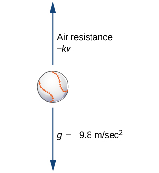
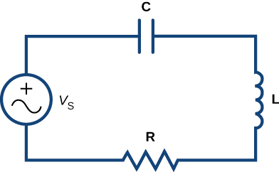
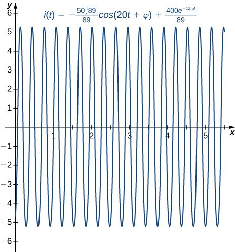
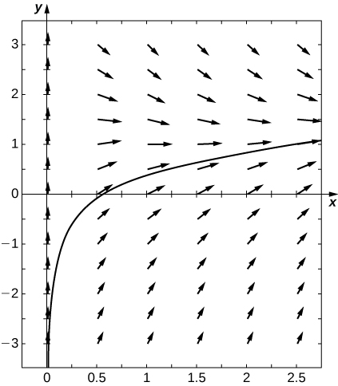

The original, as published: OpenStax, Calculus Volume 2, Strang, Herman et al., section 4.5 First-Order Linear Equations. © Rice University. CC BY-NC-SA 4.0, https://creativecommons.org/licenses/by-nc-sa/4.0/. Imported as published, from https://openstax.org/books/calculus-volume-2/pages/4-5-first-order-linear-equations
Earlier, we studied an application of a first-order differential equation that involved solving for the velocity of an object. In particular, if a ball is thrown upward with an initial velocity of ft/s, then an initial-value problem that describes the velocity of the ball after seconds is given by
This model assumes that the only force acting on the ball is gravity. Now we add to the problem by allowing for the possibility of air resistance acting on the ball.
Air resistance always acts in the direction opposite to motion. Therefore if an object is rising, air resistance acts in a downward direction. If the object is falling, air resistance acts in an upward direction (the figure). There is no exact relationship between the velocity of an object and the air resistance acting on it. For very small objects, air resistance is proportional to velocity; that is, the force due to air resistance is numerically equal to some constant times For larger (e.g., baseball-sized) objects, depending on the shape, air resistance can be approximately proportional to the square of the velocity. In fact, air resistance may be proportional to or or some other power of

We will work with the linear approximation for air resistance. If we assume then the expression for the force due to air resistance is given by Therefore the sum of the forces acting on the object is equal to the sum of the gravitational force and the force due to air resistance. This, in turn, is equal to the mass of the object multiplied by its acceleration at time (Newton’s second law). This gives us the differential equation
Finally, we impose an initial condition where is the initial velocity measured in meters per second. This makes The initial-value problem becomes
The differential equation in this initial-value problem is an example of a first-order linear differential equation. (Recall that a differential equation is first-order if the highest-order derivative that appears in the equation is In this section, we study first-order linear equations and examine a method for finding a general solution to these types of equations, as well as solving initial-value problems involving them.
A first-order differential equation is linear if it can be written in the form
where and are arbitrary functions of
Remember that the unknown function depends on the variable that is, is the independent variable and is the dependent variable. Some examples of first-order linear differential equations are
Examples of first-order nonlinear differential equations include
These equations are nonlinear because of terms like etc. Due to these terms, it is impossible to put these equations into the same form as the equation.
Consider the differential equation
Our main goal in this section is to derive a solution method for equations of this form. It is useful to have the coefficient of be equal to To make this happen, we divide both sides by
This is called the standard form of the differential equation. We will use it later when finding the solution to a general first-order linear differential equation. Returning to the equation, we can divide both sides of the equation by This leads to the equation
Now define and Then the equation becomes
We can write any first-order linear differential equation in this form, and this is referred to as the standard form for a first-order linear differential equation.
Put each of the following first-order linear differential equations into standard form. Identify and for each equation.
Put the equation into standard form and identify and
and
Multiply both sides by the common denominator, then collect all terms involving on one side.
We now develop a solution technique for any first-order linear differential equation. We start with the standard form of a first-order linear differential equation:
The first term on the left-hand side of the equation is the derivative of the unknown function, and the second term is the product of a known function with the unknown function. This is somewhat reminiscent of the product rule from the Differentiation Rules section. If we multiply the equation by a yet-to-be-determined function then the equation becomes
The left-hand side the equation can be matched perfectly to the product rule:
Matching term by term gives and Taking the derivative of and setting it equal to the right-hand side of leads to
This is a first-order, separable differential equation for We know because it appears in the differential equation we are solving. Separating variables and integrating yields
Here can be an arbitrary (positive or negative) constant. This leads to a general method for solving a first-order linear differential equation. We first multiply both sides of the equation by the integrating factor This gives
The left-hand side of the equation can be rewritten as
Next integrate both sides of the equation with respect to
Divide both sides of the equation by
Since was previously calculated, we are now finished. An important note about the integrating constant It may seem that we are inconsistent in the usage of the integrating constant. However, the integral involving is necessary in order to find an integrating factor for the equation. Only one integrating factor is needed in order to solve the equation; therefore, it is safe to assign a value for for this integral. We chose When calculating the integral inside the brackets in the equation, it is necessary to keep our options open for the value of the integrating constant, because our goal is to find a general family of solutions to the equation. This integrating factor guarantees just that.
Find a general solution for the differential equation Assume
You may have noticed the condition that was imposed on the differential equation; namely, For any nonzero value of the general solution is not defined at Furthermore, when the integrating factor changes. The integrating factor is given by the equation as For this we get
since The behavior of the general solution changes at largely due to the fact that is not defined there.
Find the general solution to the differential equation Assume
Use the method outlined in the problem-solving strategy for first-order linear differential equations.
Now we use the same strategy to find the solution to an initial-value problem.
Solve the initial-value problem
Solve the initial-value problem
We look at two different applications of first-order linear differential equations. The first involves air resistance as it relates to objects that are rising or falling; the second involves an electrical circuit. Other applications are numerous, but most are solved in a similar fashion.
We discussed air resistance at the beginning of this section. The next example shows how to apply this concept for a ball in vertical motion. Other factors can affect the force of air resistance, such as the size and shape of the object, but we ignore them here.
A racquetball is hit straight upward with an initial velocity of m/s. The mass of a racquetball is approximately kg. Air resistance acts on the ball with a force numerically equal to where represents the velocity of the ball at time
The weight of a penny is grams (United States Mint, “Coin Specifications,” accessed April 9, 2015, http://www.usmint.gov/about_the_mint/?action=coin_specifications), and the upper observation deck of the Empire State Building is meters above the street. Since the penny is a small and relatively smooth object, air resistance acting on the penny is actually quite small. We assume the air resistance is numerically equal to Furthermore, the penny is dropped with no initial velocity imparted to it.
Set up the differential equation the same way as the example. Remember to convert from grams to kilograms.
A source of electromotive force (e.g., a battery or generator) produces a flow of current in a closed circuit, and this current produces a voltage drop across each resistor, inductor, and capacitor in the circuit. Kirchhoff’s Loop Rule states that the sum of the voltage drops across resistors, inductors, and capacitors is equal to the total electromotive force in a closed circuit. We have the following three results:
where is a constant of proportionality called the capacitance, and is the instantaneous charge on the capacitor. The relationship between and is
We use units of volts to measure voltage amperes to measure current coulombs to measure charge ohms to measure resistance henrys to measure inductance and farads to measure capacitance Consider the circuit in the figure.

Applying Kirchhoff’s Loop Rule to this circuit, we let denote the electromotive force supplied by the voltage generator. Then
Substituting the expressions for and into this equation, we obtain
If there is no capacitor in the circuit, then the equation becomes
This is a first-order differential equation in The circuit is referred to as an circuit.
Next, suppose there is no inductor in the circuit, but there is a capacitor and a resistor, so and Then the equation can be rewritten as
which is a first-order linear differential equation. This is referred to as an RC circuit. In either case, we can set up and solve an initial-value problem.
A circuit has in series an electromotive force given by a resistor of and an inductor of If the initial current is find the current at time
We have a resistor and an inductor in the circuit, so we use the equation. The voltage drop across the resistor is given by The voltage drop across the inductor is given by The electromotive force becomes the right-hand side of the equation. Therefore the equation becomes
Dividing both sides by gives the equation
Since the initial current is 0, this result gives an initial condition of We can solve this initial-value problem using the five-step strategy for solving first-order differential equations.
Step 1. Rewrite the differential equation as This gives and
Step 2. The integrating factor is
Step 3. Multiply the differential equation by
Step 4. Integrate both sides:
Step 5. Solve for using the initial condition
Therefore the solution to the initial-value problem is
The first term can be rewritten as a single cosine function. First, multiply and divide by
Next, define to be an acute angle such that Then and
Therefore the solution can be written as
The second term is called the attenuation term, because it disappears rapidly as t grows larger. The phase shift is given by and the amplitude of the steady-state current is given by The graph of this solution appears in the figure:

A circuit has in series an electromotive force given by V, a capacitor with capacitance and a resistor of If the initial charge is find the charge at time
Initial-value problem:
Use the equation for an circuit to set up an initial-value problem.
| standard form | |
| integrating factor |
Are the following differential equations linear? Explain your reasoning.
Yes
Yes
Write the following first-order differential equations in standard form.
What are the integrating factors for the following differential equations?
Solve the following differential equations by using integrating factors.
Solve the following differential equations. Use your calculator to draw a family of solutions. Are there certain initial conditions that change the behavior of the solution?
[T]
[T]
[T]
[T]
[T]
[T]
[T]
[T]
Solve the following initial-value problems by using integrating factors.
A falling object of mass can reach terminal velocity when the drag force is proportional to its velocity, with proportionality constant Set up the differential equation and solve for the velocity given an initial velocity of
Using your expression from the preceding problem, what is the terminal velocity? (Hint: Examine the limiting behavior; does the velocity approach a value?)
[T] Using your equation for terminal velocity, solve for the distance fallen. How long does it take to fall meters if the mass is kilograms, the acceleration due to gravity is m/s2 and the proportionality constant is
seconds
A more accurate way to describe terminal velocity is that the drag force is proportional to the square of velocity, with a proportionality constant Set up the differential equation and solve for the velocity.
Using your expression from the preceding problem, what is the terminal velocity? (Hint: Examine the limiting behavior: Does the velocity approach a value?)
[T] Using your equation for terminal velocity, solve for the distance fallen. How long does it take to fall meters if the mass is kilograms, the acceleration due to gravity is and the proportionality constant is Does it take more or less time than your initial estimate?
For the following problems, determine how parameter affects the solution.
Solve the generic equation How does varying change the behavior?
Solve the generic equation How does varying change the behavior?
Solve the generic equation How does varying change the behavior?
Solve the generic equation How does varying change the behavior?
Solve with the initial condition As approaches what happens to your formula?
True or False? Justify your answer with a proof or a counterexample.
The differential equation is linear.
The differential equation is separable.
F
You can explicitly solve all first-order differential equations by separation or by the method of integrating factors.
You can determine the behavior of all first-order differential equations using directional fields or Euler’s method.
T
For the following problems, find the general solution to the differential equations.
For the following problems, find the solution to the initial value problem.
For the following problems, draw the directional field associated with the differential equation, then solve the differential equation. Draw a sample solution on the directional field.
for

For the following problems, use Euler’s Method with steps over the interval Then solve the initial-value problem exactly. How close is your Euler’s Method estimate?
Euler: exact solution:
For the following problems, set up and solve the differential equations.
A car drives along a freeway, accelerating according to where represents time in minutes. Find the velocity at any time assuming the car starts with an initial speed of mph.
You throw a ball of mass kilograms into the air with an upward velocity of m/s. Find exactly the time the ball will remain in the air, assuming that gravity is given by
second
You drop a ball with a mass of kilograms out an airplane window at a height of m. How long does it take for the ball to reach the ground?
You drop the same ball of mass kilograms out of the same airplane window at the same height, except this time you assume a drag force proportional to the ball’s velocity, using a proportionality constant of and the ball reaches terminal velocity. Solve for the distance fallen as a function of time. How long does it take the ball to reach the ground?
seconds
A drug is administered to a patient every hours and is cleared at a rate proportional to the amount of drug left in the body, with proportionality constant If the patient needs a baseline level of mg to be in the bloodstream at all times, how large should the dose be?
A -liter tank contains pure water and a solution of kg salt/L is pumped into the tank at a rate of L/min and is drained at the same rate. Solve for total amount of salt in the tank at time
You boil water to make tea. When you pour the water into your teapot, the temperature is After minutes in your room, the temperature of the tea is Solve the equation to determine the temperatures of the tea at time How long must you wait until the tea is at a drinkable temperature
The human population (in thousands) of Nevada in was roughly If the carrying capacity is estimated at million individuals, and assuming a growth rate of per year, develop a logistic growth model and solve for the population in Nevada at any time (use as time = 0). What population does your model predict for How close is your prediction to the true value of
Repeat the previous problem but use Gompertz growth model. Which is more accurate?
integrating factor any function that is multiplied on both sides of a differential equation to make the side involving the unknown function equal to the derivative of a product of two functions
linear description of a first-order differential equation that can be written in the form
standard form the form of a first-order linear differential equation obtained by writing the differential equation in the form